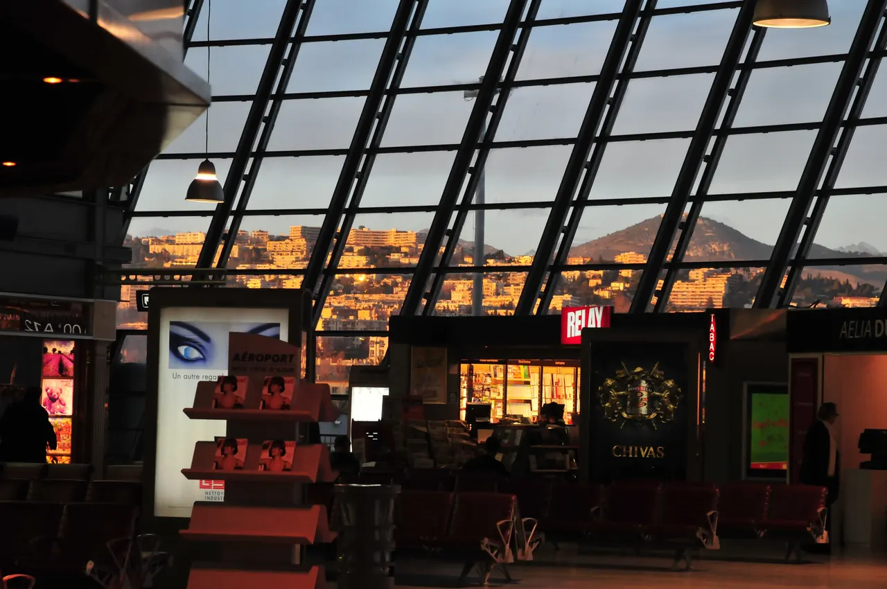

{kind=link}
기차·교통 P0
Un billet pour Lyon, s'il vous plaît.
리옹행 표 한 장 주세요.
앙 비예 푸르 리옹 실 부 플레

니스 코트다쥐르 국제공항(T1/T2)과 도심을 25분 만에 연결하는 트램 2호선(L2) 공항 노선.
프랑스에서 가장 붐비는 지방 공항 중 하나인 니스 코트다쥐르 국제공항(Aéroport Nice Côte d'Azur)과 도심을 연결하는 핵심 대중교통 노선이다.
공항의 제1터미널(T1)과 제2터미널(T2) 양쪽 모두에서 트램 2호선(Ligne 2)이 출발하며, 도심(Grand Arénas, Alsace-Lorraine, Jean Médecin, Garibaldi, Port Lympia)을 환승 없이 20~25분 만에 직결한다.
Aéroport Terminal 1 외부 승강장으로 이동.Aéroport Terminal 2 외부 승강장으로 이동 (공식 안내상 A1/A3 방향).공항 도착 후 니스 시내 숙소로 이동하는 가장 정시성이 보장되고 경제적인 수단이다. 터미널 밖 트램 승강장 자동발매기에서 Aéro 왕복권(€10) 또는 Lignes d'Azur 충전 카드를 구매하여 탑승한다.
| 항목 | 상세 정보 |
|---|---|
| 위치 | Aéroport Nice Côte d'Azur (Terminal 1 & Terminal 2), 06206 Nice |
| 운행 시간 | 매일 05:24~00:15 (약 8~10분 간격 운행) |
| 티켓 요금 | 공항 전용 Aéro 승차권(왕복 €10) 또는 Lignes d'Azur 충전 카드 일반권 (현장 발매기 카드 결제 가능) |
| 주요 경유지 | Terminal 2 → Terminal 1 → Grand Arénas → Alsace-Lorraine (Rue Verdi 숙소 권역) → Jean Médecin (트램 L1 환승) → Garibaldi → Port Lympia |
| 탑승 주의 | 트램 탑승 즉시 차내 단말기에 티켓 태그(Validation) 필수. T1 ↔ T2 간 무료 셔틀 트램으로도 이용 가능 |
🧳 수하물 팁: 트램 전 차량이 저상(Low-floor) 구조라 대형 캐리어를 끌고 편리하게 승하차할 수 있습니다.
Un billet pour Lyon, s'il vous plaît.
리옹행 표 한 장 주세요.
앙 비예 푸르 리옹 실 부 플레
Quel quai ?
몇 번 승강장인가요?
켈 케
Où est la sortie ?
출구는 어디입니까?
우 에 라 소르티

국제영화제의 상징 크루아제트 대로와 호화 요트 항구, 그리고 11세기 중세 어촌의 원형 르 쉬케 언덕이 공존하는 코트다쥐르의 영화 도시.

해발 92m 바위 절벽 위에서 천사의 만(Baie des Anges)과 구시가지, 림피아 항구를 360도 파노라마로 굽어보는 니스 최고의 천연 전망 공원.

지중해 꽃과 프로방스 제철 식재료, 그리고 갓 구워낸 니스 전통 소카(Socca)를 맛보는 유서 깊은 야외 시장 광장.

지중해로 60m 솟아오른 천연 바위 절벽 위에 조성된 모나코 대공국의 역사적 심장부이자 왕궁 마을.

크루아제트의 화려함 뒤에 숨겨진 11세기 옛 어촌의 가파른 돌계단 골목과 정상 성당에서 바라보는 칸 만의 파노라마.

칸 주민들의 부엌이자 지중해 해산물, 프로방스 과일, 꽃, 치즈가 가득한 1934년 유서 깊은 철골 재래시장.